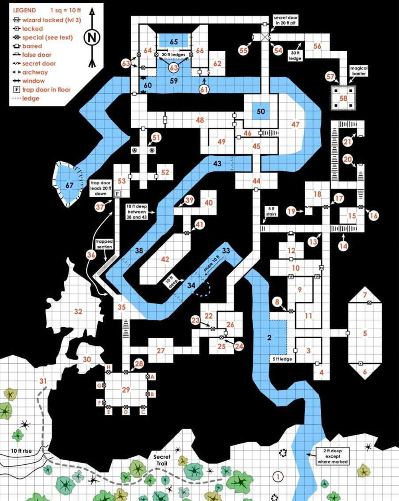

Danger Level. Risky. (2rds)
Light. Darkness.
Random Encounters
Lower Vaults
| d8 | details |
|---|---|
| 1 | Merfolk (2d4) hunting in the flooded passages try to kidnap the party |
| 2 | Frostbite Goblins (2) fishing or carrying a message for their tunnel-chief |
| 3 | A goblin scout returning to the Ice-Grip Tunnels |
| 4 | Stingbats (1d4) clinging to the ceiling or concealed beneath floating ice |
| 5 | Pale cave creepers (3d4) scavenging among refuse and dead fish |
| 6 | A pair of cold-haunted ghouls silently following the rearmost character |
| 7 | A band of hungry bandit scavengers (2d4) who followed the party's tracks |
| 8 | A beam of light sweeps across the passage, make a DC 12 DEX check or take 1d6 damage as razor-sharp shards of ice erupt from the walls |
Upper Cliff and Tunnels
| d8 | details |
|---|---|
| 1 | Merfolk (1d6) moving between a wreck and the lower caves |
| 2 | Frostbite Goblins (2d4) returning from an eastern watch post |
| 3 | A goblin lookout who shadows the party and tries to report its numbers to Rathgamon |
| 4 | Stingbats (1d4) nesting in the cracks above an ice shelf |
| 5 | Pale cave creepers (3d4) feeding on a frozen carcass |
| 6 | Cold-haunted ghouls (1d4) waiting in a windless passage |
| 7 | A small ogre scouting party (2d4) searching for escaped goblin slaves |
| 8 | Rathgamon's shadow passes over the cliff face. Goblins immediately seek cover |

OTHER INFO
Key locations: the Frozen Reliquary, Rathgamon's high cliff stronghold, and the Ice-Grip Tunnels, the Frostbite Goblins' seaside cave network.
Adventure Premise.
The Frozen Reliquary is an ancient complex cut into the highest sea cliff at Winter's Edge. Its lower chambers were built by a forgotten coastal people to preserve their dead, conduct rites, and store objects recovered from the sea. The complex is now half-flooded, ice-choked, and occupied by scavengers, restless dead, and other beasts.
Rathgamon, the Pale Sphinx, has made the upper cliff its lair. It controls the approaches with impossible demands and riddles. Those who fail its tests may be killed, imprisoned or if they're lucky, sent away. Rathgamon's presence has drawn strange creatures to the Reliquary, and its scavenged treasures have made the place worth exploring.
The Frostbite Goblins of the Ice-Grip Tunnels serve as Rathgamon's scouts. They watch the northern approaches toward Frostholm and know the routes through the sea caves, ice shelves, and wrecks. They are not Rathgamon's slaves, but have learned that cooperation is safer than defiance. They can be bargained with, misled, or persuaded to turn against the Sphinx.
The goblins may also know of the Runt-Grown Goblins held by the northern ogres. The Frostbite Goblins regard them as kin, their northern cousins, though they have little reason to trust outsiders who claim they can help.
Background.
Long ago, a coastal people carved the Frozen Vaults into the cliff. They used the chambers for research, worship, and the ritual disposal of their dead. Their rites involved cold, tides, and the preservation of bodies and objects beneath the sea. As their settlements declined, the vaults were sealed and forgotten.
Centuries later, Rathgamon found the upper chambers and claimed the cliff. It is old, pale, and altered by the cold. It does not need to patrol every passage; its riddles, reputation, and control of the heights keep most intruders away. It sends the Frostbite Goblins to observe travellers, count their numbers, and report anything moving from Frostholm.
The lower vaults remain dangerous for reasons unrelated to Rathgamon. Old wards still function and the dead stir. Predators use the flooded passages as hunting grounds and a powerful presence in the deepest water has grown around the remains of the ancient complex.
Getting the Party Involved.
The party may find a weather-stained map showing a creek-like meltwater channel that enters a cleft below the Frozen Reliquary. A long, arm-length metal implement with several geometric prongs is wrapped inside it. Locals believe the implement is a key or ritual tool.
Rumours say the cliff vaults contain the preserved wealth of a dead king. The Frostbite Goblins know the map's approach and may offer to guide the party for payment, a favour, or news of the Runt-Grown Goblins.
The main entrance is a narrow sea cave at the foot of the cliff (Area 1). The tide and weather can make the approach treacherous. At high tide, the lower part of the entrance is submerged.
General Features.
Unless an area says otherwise:
Sea passages. Cold seawater fills the lower passages. Water depth varies from ankle-deep to chest-deep with the tide. Strong currents pull toward the lower caverns.
Ceilings. Most rooms and corridors are 10 feet high. Natural caverns are irregular and may be much higher.
Doors. Ancient wooden doors are swollen, iron-banded, and often frozen in place. Some have been forced or broken by later occupants.
Cold. Exposed characters become numb after prolonged time in wet clothing. A character soaked in freezing water who cannot get dry and warm risks cold damage or exhaustion at the GM's discretion.
Ice. Sloped or flooded stone may be slick. Running, fighting, or carrying a heavy load across it may require a check to avoid falling.
Tides. Unless the party has a reason to know otherwise, the water rises and falls over several hours. Lower routes may become impassable at high tide.
The Frostbite Goblins.
The Frostbite Goblins are an independent band occupying the Ice-Grip Tunnels. They are practical, suspicious, and keenly aware that Rathgamon is more powerful than they are. They serve as scouts because the arrangement gives them a measure of safety and leaves them free to trade, fish, and move through the sea caves.
They do not automatically attack intruders. They prefer to observe, bargain, misdirect, or demand a toll. They are especially interested in food, warm clothing, metal tools, information about the west, and news of other goblin bands.
The goblins know:
Rathgamon watches the cliff and can reach the upper ledges quickly.
The Sphinx's riddles are not always fair. Some have no answer that Rathgamon will accept.
A hidden route connects the Ice-Grip Tunnels to a narrow shelf below the Frozen Reliquary.
The lower vaults contain living dead and hunters.
Ogres have taken goblins from other bands and forced them to serve. The Frostbite Goblins know of the Runt-Grown Goblins and want proof that they still live.
The goblins may become allies if the party helps them break Rathgamon's hold, brings reliable news of the Runt-Grown Goblins, or gives them a way to leave the cliff safely. They will not risk their entire band for a vague promise.
The Lower Vaults and the Ice-Grip Tunnels.
The original complex's map marks further rooms and passages beyond Area 21. Areas 22 to 67 are the important lairs and features of that deeper section. Use the map's numbered locations to place them. The passages between these sites are flooded, broken, and often crossed by narrow ice shelves.
GM Notes.
Rathgamon should feel like the ruler of the region.
The Frostbite Goblins are an independent faction. They can be allies, informants, guides, or antagonists depending on how the party treats them.
Keep the norther approaches toward Frostholm relevant. Goblin scouts may know of approaching threats before anyone in Frostholm does.
Use the Runt-Grown Goblins as a point of connection between the Frostbite Goblins and the ogres. This gives the party a reason to negotiate with the goblins beyond simple treasure.
The sea should remain active throughout the adventure. Tides, wrecks, currents, ice shelves, and predators make travel through the complex different from an ordinary underground dungeon.